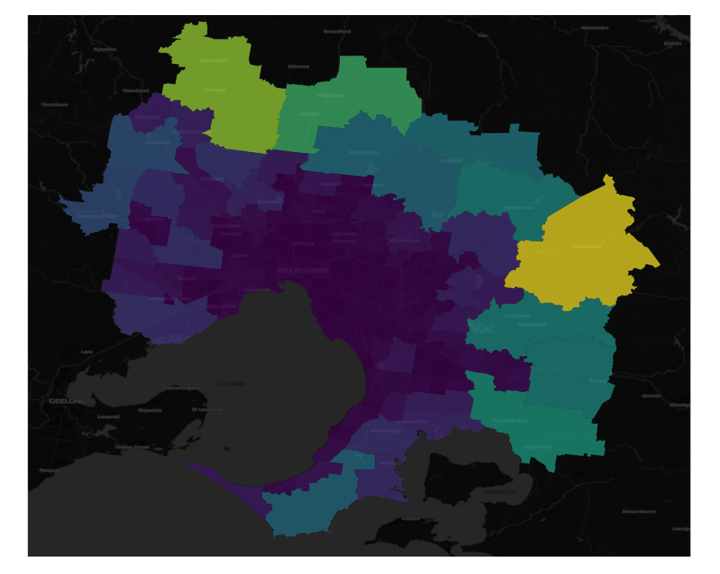

Geospatial analysis in a secure environment
Working with sensitive data, such as in healthcare, requires additional security in the environments that data science work is done in. Often I am forced to do my data science work using virtual machines which are isolated from the public internet. This introduces many limitations to data science workflows, one in particular being the ability to perform geospatial analysis and visualisation. Packages like Folium require access to a web mapping service to download the map tiles for an area of interest. I therefore had to find a way around this.
After some experimentation, I found a combination of contextily and geopandas were suitable as they allow you to download the map tiles and then plot them along with any data. There are two steps here:
- Use contextily to download the map tiles that are required for your application
- Plot the data and basemaps using geopandas.
The first step can lead to a large amount of data being downloaded (around 2Gb in my case).
Downloading map tiles
Contextily requires the place name to be specified and uses OpenStreetMap’s Nominatim geocoder. This is suitable for geocoding suburbs, local government areas, states and other regions provided there are no spelling errors. Using a list of standard place names such as those from official government sources is therefore important.
As an example, the following code will download the map tile for the Local Government Area of Moreland in Australia.
import contextily as ctx
lga = ctx.Place("Melbourne, Victoria, Australia",
source=ctx.providers.CartoDB.DarkMatter,
path='data_folder/greater_melbourne_maptile.tiff')There are a few different sources of freely available map tiles.
Visualisation of data
It is now straightforward to write a script to loop through the areas of interest and download the corresponding map tile. Once the files are downloaded these can be plotted using contextily and geopandas. For example, using the SA2 shapefiles for greater melbourne we can plot each of these against our recently downloaded basemap, using shading based on the area.
import contextily as ctx
import geopandas
%matplotlib inline
ax = sa2_gm.plot(figsize=(15, 15), linewidth=1, alpha=0.7, column='AREASQKM21')
ctx.add_basemap(ax, crs=sa2_gm.crs, source=f"data_folder/greater_melbourne_maptile.tiff")
ax.set_axis_off()And here is what the output should look like: 
The notebook describing how to download the map tiles is available here and for visualisation here.